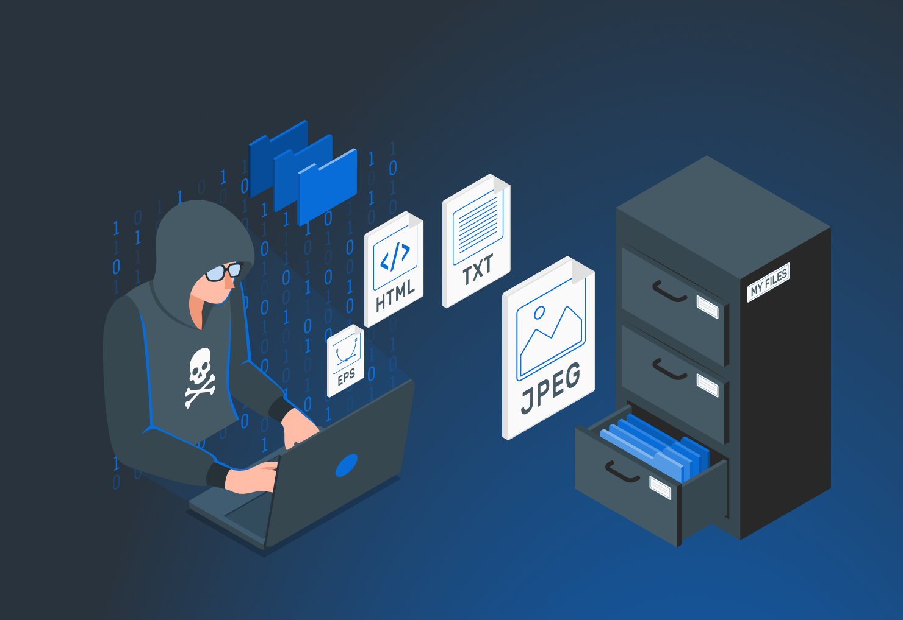

En el vasto mundo digital, los atacantes informáticos adoptan diferentes formas y motivaciones. Desde los hacktivistas que luchan por causas políticas hasta los cibercriminales que buscan lucro económico, el espectro de amenazas es diverso y en constante evolución. Conocer los distintos tipos de atacantes es fundamental para comprender mejor los riesgos a los que se enfrentan las empresas y los individuos en la actualidad, así como para desarrollar estrategias de defensa más efectivas.
Aquí exploraremos algunos de los tipos de atacantes presentes en el mundo de la ciberseguridad.
1. Script Kiddies
Novatos que utilizan herramientas creadas por otros sin entender su funcionamiento. Habitualmente son jóvenes cuyo objetivo es tratar de impresionar o demostrar que tienen capacidad de realizar un ataque tanto en sus círculos cercanos como en comunidades de aficionados a la ciberseguridad, aunque aún no tienen la capacidad de escribir programas complejos o exploits por sí mismos. Por lo tanto, el término se considera despectivo y no se refiere a la edad real de la persona.
2. Hackers Éticos (White Hat)
Profesionales que realizan pruebas de seguridad legalmente. A diferencia de los hackers de “sombrero negro”, cuyo objetivo es explotar estas fallas para beneficio personal o dañar a las organizaciones, los hackers éticos actúan en nombre de la seguridad y la protección. Su objetivo primordial es explotar las defensas de una organización, anticipándose a las posibles amenazas que los ciberdelincuentes malintencionados podrían explotar.
3. Hackers Maliciosos (Black Hat)
Atacantes que buscan causar daño o beneficio propio ilegalmente. Algunos también se dedican a robar contraseñas, números de tarjetas de crédito y otras clases de información confidencial, a tomar sistemas de rehén o a propagar malware diseñado para borrar archivos.
4. Hacktivistas
Individuos o grupos que atacan sistemas por motivos políticos o sociales. Algunos hacktivistas han llegado a decir que suelen atacar a las webs específicas que tienen relación con un país o una ideología o modo de vida contrarios a los ideales de estos cibercriminales. Sin embargo, también es frecuente que los hacktivistas seleccionen páginas web no tan directamente relacionadas con su causa, pero con altas tasas de visualización para tratar de llegar a más personas y que su mensaje se difunda lo máximo posible.
5. Ciberdelincuentes Organizados
Grupos estructurados que cometen delitos para obtener ganancias financieras. La definición incluye también el requisito de que el grupo cometa delitos graves. El término delito grave se define en la Convención no mediante referencia a tipos concretos de actividad delictiva, sino mediante referencia a las sanciones aplicables. En concreto, “la conducta que constituya un delito punible con una privación de libertad máxima de al menos cuatro años o con una pena más grave”.
6. Insiders Maliciosos
Empleados que abusan de su acceso para filtrar información o sabotear sistemas. Las motivaciones pueden ser diferentes. Estos insiders pueden actuar para obtener algún beneficio propio (normalmente económico), pero también puede tratarse de personal descontento que lo haga para vengarse por algún motivo, como un despido, o simplemente para crear un problema o conflicto en la empresa.
7. Espías Corporativos
Atacantes que buscan información confidencial de empresas para ventaja competitiva. Si bien la información sensible de una empresa puede ser comercial (datos de clientes) o estratégica (recursos humanos), la que suele ser objeto de robo es la industrial (marcas, patentes o procesos), ya que se trata de un bien intangible cuyo filtrado podemos tardar años en detectar. Las consecuencias pueden ser desde perder un contrato en el último momento hasta ver como aparece en el mercado un producto parecido al nuestro poco antes de lanzarlo.
8. Ciberterroristas
Atacantes que buscan desestabilizar sistemas críticos por motivos ideológicos. Todos los usos que se le pueden dar al ciberespacio en cuestiones relacionadas al ciberterrorismo son innumerables e inimaginables, por ejemplo para buscar financiamiento, reclutamiento o entrenamiento; como medio de comunicación o propaganda y de muchas otras formas. Sin embargo, es de destacarse su uso para fijar objetivos ya que es ahí precisamente donde se remarca la importancia del ciberespacio en estos casos: es una herramienta que ha bajado costos y ha ampliado las posibilidades de la logística terrorista.
9. Phishers
Especialistas en engañar a usuarios a través de correos electrónicos, mensajes de texto o sitios web falsos, haciéndose pasar por entidades legítimas como bancos o empresas, con el fin de obtener información sensible como contraseñas, números de tarjeta de crédito o datos personales. Los ataques de phishing son cada vez más sofisticados, utilizando técnicas como el spear phishing, donde los mensajes están altamente personalizados para aumentar la efectividad.
10. Spammers
Atacantes que envían grandes cantidades de correos electrónicos no solicitados con fines publicitarios, engaños o para propagar malware. Los correos masivos pueden contener enlaces a sitios fraudulentos, descargar malware o incluso ser parte de campañas de phishing. Además, el spam no solo se limita a correos electrónicos, también puede aparecer en redes sociales, mensajes de texto o comentarios en blogs.
11. Botmasters
Operadores de redes de computadoras infectadas, conocidas como botnets. Un botmaster puede controlar cientos o miles de computadoras sin que sus dueños lo sepan, y utilizarlas para realizar ataques coordinados como ataques DDoS (Denegación Distribuida de Servicio), envío de spam masivo o robo de información. Los botnets son una herramienta poderosa en el ecosistema del cibercrimen, y son difíciles de detectar y desmantelar.
12. Keyloggers
Atacantes que emplean software o hardware diseñado para registrar cada pulsación de teclado que realiza la víctima, obteniendo así información sensible como contraseñas, datos bancarios y correos privados. Los keyloggers pueden ser instalados mediante malware, o en algunos casos, incluso como dispositivos físicos conectados a la computadora de la víctima.
13. Carders
Estos delincuentes se especializan en el robo y comercio de información de tarjetas de crédito y débito. Suelen obtener los datos a través de phishing, keyloggers o ataques directos a bases de datos de tiendas en línea. Los "carders" no solo roban información, sino que también participan en el mercado negro, donde compran y venden datos de tarjetas robadas.
14. Cyberstalkers
Atacantes que se dedican a acosar a individuos en línea, invadiendo su privacidad a través de correos electrónicos, redes sociales, o rastreo digital. Los cyberstalkers buscan intimidar o manipular a sus víctimas, y a menudo, sus acciones pueden derivar en ataques físicos o extorsión. Este tipo de acoso puede tener graves consecuencias psicológicas para las víctimas.
15. Saboteadores
Motivados por la venganza o la protesta, los saboteadores buscan destruir o alterar sistemas y datos. Sus ataques pueden ser dirigidos hacia infraestructuras críticas, organizaciones o individuos. A menudo buscan causar daño directo, interrumpir operaciones o destruir datos valiosos, afectando la reputación o el funcionamiento de la entidad atacada.
16. Explotadores de Vulnerabilidades de Día Cero
Estos atacantes se centran en explotar vulnerabilidades de software que aún no han sido descubiertas o parchadas por los desarrolladores. Estos fallos, conocidos como vulnerabilidades de día cero, son muy valiosos para los atacantes, ya que les permiten comprometer sistemas sin ser detectados. Las empresas de seguridad y los desarrolladores están en constante carrera contra estos atacantes para mitigar el daño antes de que la vulnerabilidad sea pública.
17. Ingenieros Sociales
Atacantes que utilizan técnicas de manipulación psicológica para engañar a personas y hacerlas revelar información confidencial o permitir el acceso a sistemas seguros. A diferencia de los hackers que se centran en vulnerabilidades técnicas, los ingenieros sociales se enfocan en la "vulnerabilidad humana", explotando la confianza o el descuido de las víctimas.
18. Cryptojackers
Atacantes que instalan software en los dispositivos de las víctimas para utilizar su poder computacional en el minado de criptomonedas, sin su conocimiento ni permiso. Aunque estos ataques no buscan robar información directamente, pueden degradar el rendimiento del sistema y aumentar el consumo de electricidad, lo que afecta económicamente a la víctima.
19. Defacers
Especialistas en alterar el contenido de sitios web, modificando páginas para mostrar mensajes no autorizados o propagandísticos. Este tipo de ataque, aunque no siempre busca robar datos, puede dañar gravemente la reputación de una organización al mostrar mensajes ofensivos, políticos o simplemente alterar su imagen pública.
20. Desarrolladores de Malware
Son los creadores de virus, troyanos, ransomware, spyware y otros tipos de software malicioso. Su objetivo es crear herramientas que puedan infiltrarse en sistemas, causar daño, robar información o generar beneficios financieros. Los desarrolladores de malware pueden vender sus creaciones en mercados clandestinos o utilizarlas ellos mismos para ataques dirigidos.